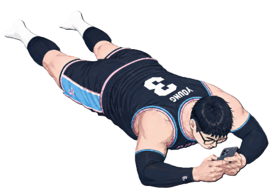

背景实验室A版小样 | ?theme=light 白天金 / ?theme=dark 夜晚紫极光 | 移动鼠标检查右下吴昊阳四角不穿帮
Explore
About
Contact
Touch & move to look around
Tap here to explore
+
Jordan Breton
Your brand deserves to stand out!
0%
Start
Initializing...
✨ Portfolio update!
A new version is available.
Reload now